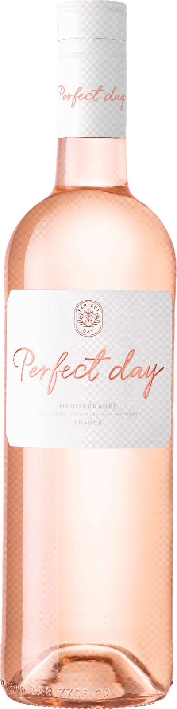
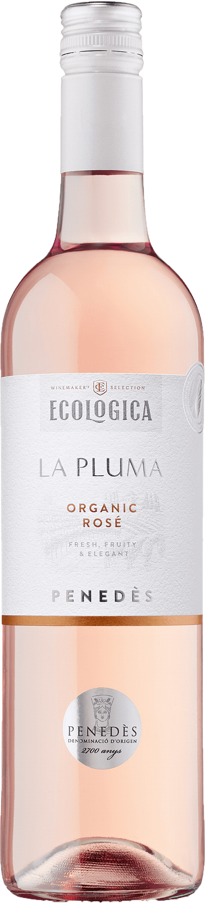

Veckans Röda Viner
Perfect day
Ungdomlig, bärig, mycket frisk smak med inslag av smultron, röda vinbär, färska örter, hallon och blodgrapefrukt. Serveras vid cirka 8°C som sällskapsdryck, till fisk- och kycklingrätter eller till sallader.
Land: Frankrike
Volym: 750ml
Alkoholmängd: 15%
Pris: 99kr
Ecologica La Pluma
Bärig, ungdomlig smak med inslag av smultron, örter, jordgubbar och blodgrapefrukt. Serveras vid cirka 8°C som sällskapsdryck, till rätter av fisk eller skaldjur eller till sallader.
Land: Spanien
Volym: 750ml
Alkoholmängd: 12.5%
Pris: 93kr